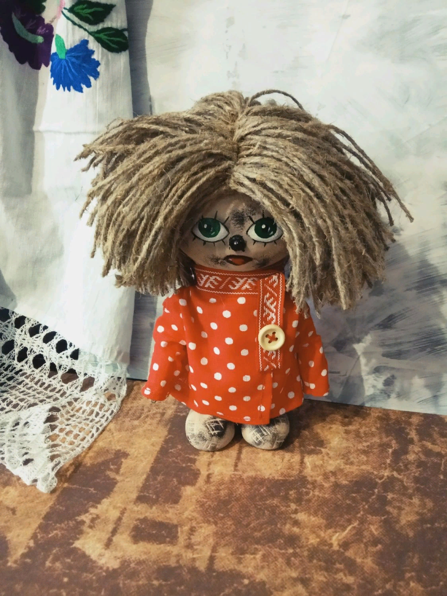

Домовенок Кузька и Бабёныш-Ягёныш
Татьяна Александрова
Глава 1. «А у нас в Антарктиде»
— Охти мне, батюшки, охти мне, матушки, — мечется по избе домовенок Кузька, — ставни не покрашены, печка не побелена, на полу бумажка от конфетки валяется. Позор на мои лапти!
Чуть не плачет домовенок. Вот-вот гости на пороге покажутся, а изба еще не в полной готовности. А для домовых самый страшный позор, если гости непорядок в их владениях заметят. Разнесут гости по всему белому свету весть о бесхозяйственном домовом и будут звать такого домового некошным. И лапы ему никто не подаст.
И главное — не так уж и виноват Кузька. Было бы у него время — заставил бы дедушку ставни покрасить, попросил бы бабушку печь перебелить, велел бы Лидочке, внучке их, бумажку с пола поднять. Лидочка была хорошая девочка, но вот никак не могла с бумажками справиться: так они и сигали у нее из рук на пол, так и сигали! Надо сказать, что раньше Кузька дружил со старшей сестрой Лидочки — Анюткой, но сейчас Анютка выросла и перестала замечать домового. Есть у людей такая непонятная особенность: видят их только совсем маленькие, как Лидочка, и совсем старенькие, как бабушка Настасья.
Итак, сейчас у Кузьки не было самого главного — времени. Только сейчас сказала Лидочка, что должен приехать к ним на лето братец двоюродный из города — Матвейка.
— Из города? — перестал на время причитать Кузька. — Не знаю такого. Что это? Далеко это?
Лидочка сама никогда не была в городе, но от дедушки про город слыхала. Правда, она не очень верила во все, что рассказывал дед.
— Город — это такая больша-а-ая деревня. Ну если бы к нашей еще соседнюю приставить. Людей там — видимо-невидимо. И все бегают, как мураши в муравейнике, и все спешат.
— Стоп-стоп, — перебил ее нетерпеливый домовенок, — куда спешат-то? На пожар или собрание?
— Про пожары дедушка ничего не рассказывал, — немного подумав, отвечает Лидочка, — в собрание, верно. И так спешат они в это собрание, что не успевают не только про здоровье родственников расспросить, но и поздороваться.
— Ух ты! — удивился домовенок.
Уж он-то никогда бы не прошел мимо встречного домового. И про его родных поспрашивал бы, и про своих рассказал. И про Нафаню, и про Сюра, и про Афоньку, и про Адоньку, и про Вокулочку, и про Сосипатрика, и про Лютонюшку, и про Кувыку. Да мало ли родственников у домовенка!
— И так им там, бедным, тесно, что живут они на голове друг у друга.
— Ой, мамочки, — охрип от перепуга Кузька, — прям так и бегают по улицам? Один снизу, а другой сверху?
— Нет, — успокоила его Лидочка, — бегают они нормально, по одному, а вот дома друг на дружку ставят.
— И огороды ставят? — не поверил домовенок. — И коровники?
— Нет у них ни огородов, ни коровников, — опустила голову девочка, — негде им клубнички сажать, негде коровок пасти.
— Ой, папочки, — еще больше охрип домовенок, — и такие люди к нам в гости едут?
— Только один такой. И то — маленький.
Задумался Кузька. Это что же получается? Живут они тут, горя не знают, а на свете такое делается! Такое! И никто тревогу не поднимает. Никто не реагирует. Никто спасать городских жителей не бежит. И куда только их домовые смотрят? А он-то за небеленую печь волновался!
— Мы этого вашего Матвейку голубить будем, — решил он, — молочка попробовать дадим, на травку гулять выпустим, коровку покажем.
— Едут, едут, — прервал его крик со двора, — гости едут.
Матвейка оказался совсем не таким, каким представлял его Кузька. Домовенок думал, что приедет чумазенький ребенок с тонкими синими ручками, будет все время бегать по кругу, озираться и пытаться кому-нибудь на голову забраться. А Матвейка был совсем не похож на городского; щеки круглые, уши солидные, взгляд важный, рубаха алая, козырек блестящий.
— Что-то тут не так, — решил Кузька, — никак Баба Яга нашего бедного Матвейку в полон забрала, а этого сытого Бабеныша Ягеныша нам подсунула.
А того не понимает Кузька, что не резон Бабе Яге тощего мальчишку забирать, а толстого отдавать. Тощего-то еще откормить надо — что на жаркое, что на супчик.
Решил домовенок спрятаться до поры, до времени и понаблюдать, что этот щекастый Матвейка делать будет. Для домовенка спрятаться нет никакой трудности. Захочет — в любую щель пролезет, захочет — невидимым сделается. Если успеет. Сделался Кузька невидимым и сел на загнетку, ножки свесил. Ему-то с печки всех видно, все слышно.
Сидит Матвейка за столом, все вокруг него собрались, радуются: бабушка блины подкладывает, Лидочка сметану поближе пододвигает, дед просто так сидит. Дедушкам не положено за столом хозяйничать. У дедушек других забот полно.
— Да что там ваши куры! — важничает Матвейка. — Есть такие куры, что яйца несут размером с крынку.
— Это в городе? — не верит Лидочка. Говорили же ей, что в городе места нет для курятников.
— Нет, не в городе, в Антарктиде, — отвечает Матвейка. — Страна такая есть на юге. Эти куры и в упряжках бегают, и вместо собак на цепи сидеть умеют. Лаять — не лают, а клюнут — мало не покажется.
— Так это не кура, это просто незаменимая животина получется, — завидует дедушка, — вот бы нам такую на двор! А то от Тобика одна польза — гавкает громко, а яиц не несет, в упряжке не бегает. И как же это чудо природное называется?
— Живафа, — отвечает Матвейка, пытаясь прожевать целый блин, засунутый за щеку.
— А вот и не жирафа, не жирафа! — кричит Лидочка. — Жирафа у меня в книжке есть и кроме красоты от нее никакой пользы — только листья, как гусеница ест.
— Ну не жирафа, — справляется с блином Матвейка, — а страус. Уж и забыть нельзя. До чего же ты, сестрица, придирчивая.
Засмущалась Лидочка: и правда, негоже перед гостем умничать, в неловкое положение его ставить. А Матвейке хоть бы хны. Знай, накладывает себе сметану на блин.
— Ну, Лидочка, развлекай гостя, а я пойду Буренку доить, — поднимается бабушка.
В деревне, конечно, все не бегают, как в городе, но и сидеть за разговорами времени нету, За бабушкой и дед ушел — кроме него, никто корове и лошадке сена не накосит.
— А я, — решила тоже прихвастнуть Лидочка, — с домовым дружу. И не только с ним, но и с шишигой, и с кикиморой запечной знакома.
— Сказки, — облизал пальцы Матвейка, — в наш век невиданного прогресса науки и техники стыдно верить в бабушкины сказки.
Примолкла Лидочка. И чего это она, право? Человек из города приехал, прогресс науки и техники, может, своими глазами видел, а она ему — про домовых. Про обычных домовых, которых навалом в каждом доме, не то, что жирафов.
— Это я бабушкины сказки? Это в меня стыдно верить? — мечется Кузька на печи. — Ну ладно, я вам всем покажу сказки. Вот устрою забастовку, посмотрю, как вы без моей помощи хозяйство вести будете. И никакие чудо-куры вам не помогут!
Продолжение следует